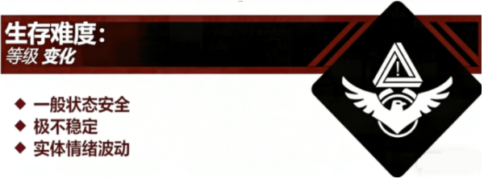

Level 0.3 - "家长等候区（保留页面）"
注意：本页面为保留页面，其内容可能已经过时，请读者在分辨事实的情况下阅读该页面，谢谢配合！

描述：

Level 0.3 是唯一能从School Rooms逃离的层级，它可以看作Level 0的延续，流浪者在放学后就会被“老师”组织的路队带到这里。
Level 0.3 中最常见的实体为“家长”，特别是在“放学时间”尤为常见。经检验和调查，该实体在此层级时情绪会比正常状态更加不稳定，以至于对流浪者产生更强的攻击欲望，这种情况可以看作是一种“随机事件”，如果流浪者遇到此情况，可以选择对“家长”展示100分“试卷”，这样在大部分情况下可以消除“家长”的攻击欲望，除非其处于非正常状态中。
该层级由流浪者Alice2023和他的朋友Tom首次发现，他主动记录并提供了他刚刚来到 Level 0.3 时的录音：
[录音开始]
Alice2023：各位S.M.E.G成员，我好像发现了一个全新的层级！
Mary(S.M.E.G成员)：请详细描述一下你那边的情况，以便于更多流浪者了解这个层级。
Alice2023：我本来在Level 1跟着“老师”带领的路队往外走，你知道的，现在大家流传说，绝对不能跟着路队出去，否则会遇到未知的危险！
Mary：你的意思是，你跟着路队出去了？
Alice2023：对，我当时大脑一片空白，不知怎么的就跟着队伍走出了大门，然后又不知怎么的就发现自己来到了这个新的层级，跟着我一起来的另一个朋友Tom就在我旁边，其他人好像都趁着“老师”没发现跑到Level 0去了……
Mary：请问你在这个层级里有发现什么危险或者实体吗？
Tom：目前我们暂时很安全，我一开始来到这个层级的时候差点以为这是Level 0，他们长得实在太像了。等等，我看到了什么？？？
Alice2023：是“家长”！他们怎么会出现在这里？？？？？
Mary：请你们立刻前去调查，这里可能藏着离开学校的方法！
[录音结束]
之后，据Alice2023和Tom汇报，他们跟随“家长”回到了家中，这也是首例成功从学校通过正常手段逃出的流浪者（其他流浪者都直接趁机溜走了）。S.M.E.G鼓励流浪者从本层级离开学校，比起非正常手段，这样做的安全系数会高很多。
但是，前面也提到过，此层级极其不稳定，且在本层级中“家长”的情绪几乎是不可控的，除非使用100分“试卷”才能进行消除，并且在小概率情况下还可能失效。对此，S.M.E.G建议流浪者在Level 0.3先观察“家长”的微表情，确认正常后再进行逃离，否则，可以选择按兵不动或回到Level 0观察，只有在万不得已的情况下才冒险走出去。
入口和出口：
离开本层级，可以回到“家”。